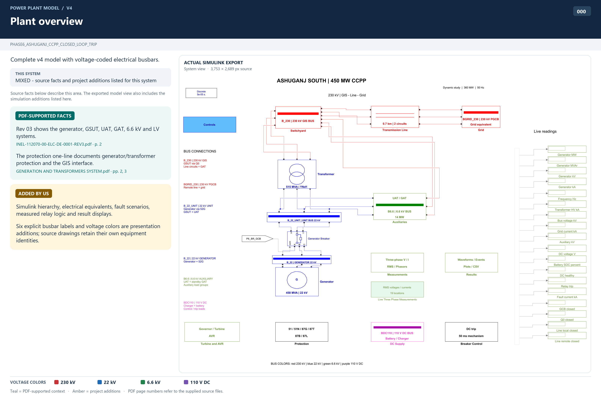

Plant overview
Complete v4 model with voltage-coded electrical busbars.
MIXED - source facts and project additions listed for this system
Source details and model path
PHASE6_ASHUGANJ_CCPP_CLOSED_LOOP_TRIP
- Rev 03 shows the generator, GSUT, UAT, GAT, 6.6 kV and LV systems.INEL-112070-00-ELC-DE-0001-REV3.pdf · p. 2
- The protection one-line documents generator/transformer protection and the GIS interface.GENERATION AND TRANSFORMERS SYSTEM.pdf · pp. 2, 3
- Simulink hierarchy, electrical equivalents, fault scenarios, measured relay logic and result displays.
- Six explicit busbar labels and voltage colors are presentation additions; source drawings retain their own equipment identities.